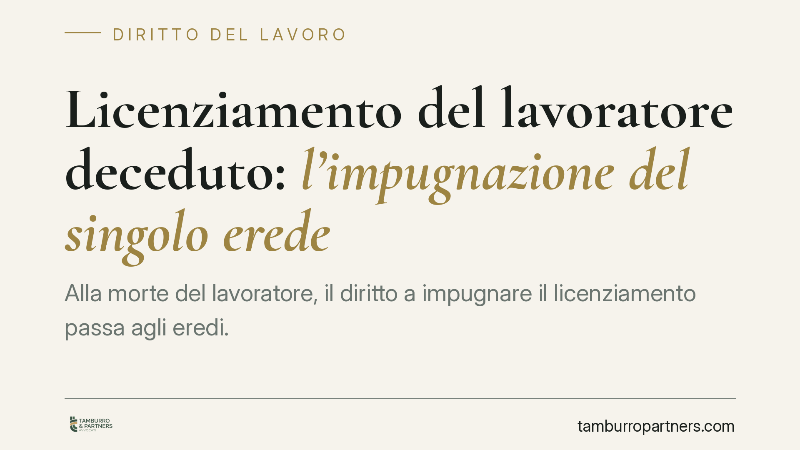

Licenziamento del lavoratore deceduto: l'impugnazione del singolo erede
Alla morte del lavoratore, il diritto a impugnare il licenziamento passa agli eredi. Ma se solo uno di loro agisce entro i termini, cosa accade agli altri e alla ripartizione dell'eventuale risarcimento? Una recente pronuncia di merito affronta il tema, distinguendo tra decadenza dall'impugnazione e destino del credito ereditario. Ecco i profili tecnici e le cautele operative.

Il caso
Un lavoratore muore dopo essere stato licenziato. Uno solo dei coeredi impugna il recesso nei termini di legge e ottiene una pronuncia di illegittimità per sproporzione della sanzione rispetto al fatto contestato. Restano aperte due questioni: l'impugnazione compiuta da un solo erede giova anche agli altri? E chi ha agito può riscuotere l'intero risarcimento?
La pronuncia richiamata dalla stampa specializzata è una sentenza di merito. Il dato identificativo (numero e anno) va confermato in redazione: circolano riferimenti a un'annualità non ancora conclusa, il che impone prudenza. In ogni caso, trattandosi di decisione di primo grado, non ha valore vincolante generale e non esprime un orientamento consolidato.
Inquadramento normativo
Occorre tenere separati due piani che spesso vengono confusi.
Primo piano: la decadenza dall'impugnazione. L'art. 6 della L. 604/1966 impone di impugnare il licenziamento, a pena di decadenza, entro sessanta giorni dalla ricezione, con un successivo termine di centottanta giorni per il deposito del ricorso o la comunicazione della richiesta di conciliazione. La decadenza è un istituto autonomo, disciplinato dagli artt. 2964-2966 cod. civ.: si evita compiendo l'atto previsto entro il termine. È bene chiarirlo: agli effetti della decadenza non si applicano le regole sull'interruzione della prescrizione, che seguono una logica diversa. L'atto di impugnazione non "interrompe" un termine, ma lo consuma validamente, impedendo che il diritto si estingua.
Quando gli eredi subentrano nella posizione del lavoratore, ciascuno di essi è legittimato a impugnare. La questione delicata è se l'impugnazione tempestiva di uno solo eviti la decadenza anche a favore degli altri, oppure operi soltanto per chi ha agito. La sentenza propende per l'efficacia limitata al coerede diligente: chi non impugna nei termini resta esposto agli effetti decadenziali. È una lettura rigorosa, coerente con la natura personale dell'onere di impugnazione.
Secondo piano: il destino del credito. Il risarcimento da licenziamento illegittimo è un credito pecuniario e, in quanto tale, divisibile. Secondo il principio consolidato in materia successoria, i crediti divisibili del de cuius si ripartiscono automaticamente tra i coeredi in proporzione alle rispettive quote (artt. 727 e 757 cod. civ.; principio della divisione dei crediti ereditari). Non nasce, di regola, un'obbligazione solidale attiva tra coeredi.
Ne deriva una conclusione asimmetrica ma coerente: il coerede che ha impugnato e agito in giudizio consolida la propria posizione e la propria quota; gli altri, se sono incorsi nella decadenza, non possono più far valere autonomamente il diritto. Là dove il giudice riconosca al singolo la legittimazione a incassare somme eccedenti la sua quota — ipotesi da verificare nel testo integrale della decisione — resta comunque fermo l'obbligo di rendiconto e di restituzione del di più verso gli altri coeredi.
Il merito: la sproporzione
Sul piano sostanziale, il licenziamento è stato dichiarato illegittimo per violazione del principio di proporzionalità. La sanzione espulsiva deve essere adeguata alla gravità della condotta contestata: quando il fatto è di modesta rilevanza, il recesso è sproporzionato e non regge il vaglio del giudice. È un principio stabile, indipendente dalle vicende successorie.
Implicazioni pratiche
Per gli eredi di un lavoratore licenziato, il messaggio è netto: la posizione ereditaria non congela i termini. La decadenza corre e va presidiata da subito. Confidare nel fatto che l'iniziativa di un coerede copra tutti è rischioso.
Sul versante economico, il credito da risarcimento tende a dividersi pro quota. Chi anticipa l'azione non acquisisce automaticamente l'intero, e chi incassa somme altrui è tenuto a renderne conto.
Cosa fare in concreto
- Verificate subito i termini. Individuate la data di ricezione del licenziamento e calcolate i sessanta giorni per l'impugnazione: il decorso non si sospende per l'apertura della successione.
- Impugnate a nome di tutti i coeredi, ove possibile, per evitare che la decadenza colpisca chi resta inerte.
- Ricostruite l'asse ereditario e le quote prima di agire in giudizio, così da impostare correttamente le richieste risarcitorie.
- Regolate per iscritto i rapporti tra coeredi, prevedendo obblighi di rendiconto sulle somme eventualmente incassate da uno solo.
- Fate confermare in redazione o con il vostro legale gli estremi della pronuncia: si tratta di sentenza di merito, priva di efficacia vincolante generale.
Disclaimer
Contributo informativo a cura di Tamburro & Partners - Avv. Giuseppe Tamburro. Non costituisce parere legale.
Ogni storia di lavoro ha i suoi tempi.
Se gestisci HR e vuoi un confronto su contenzioso, ispezioni o licenziamenti, scrivi allo studio. Ti rispondiamo entro un giorno lavorativo.